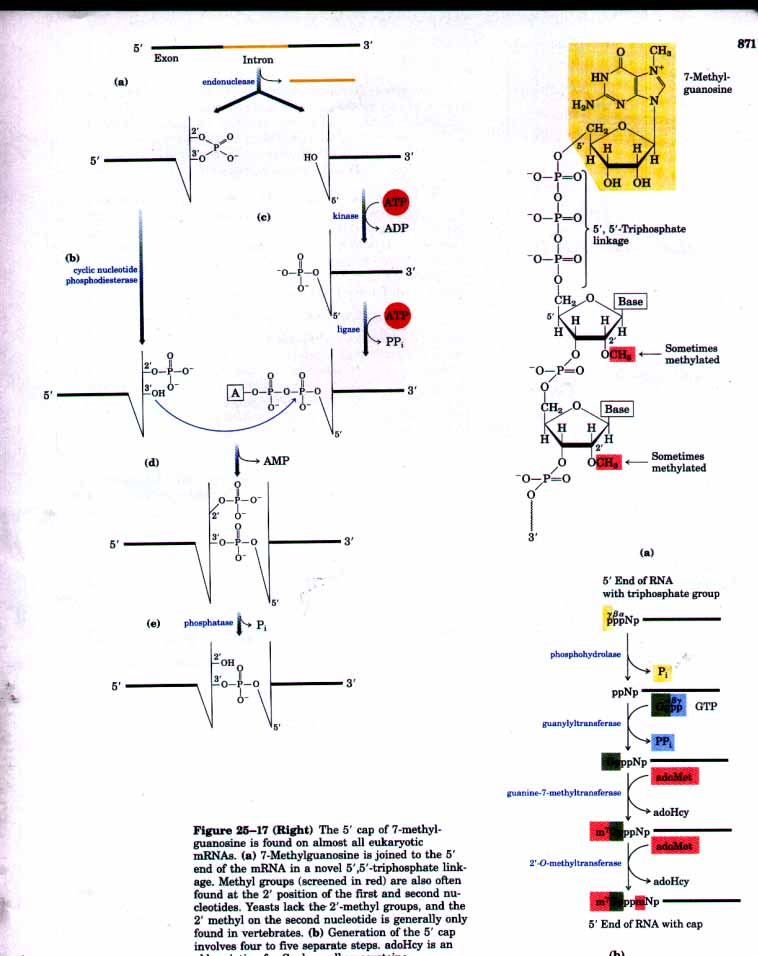
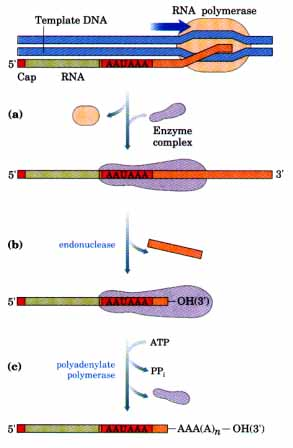
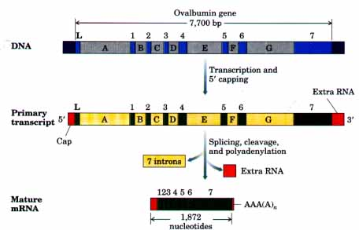
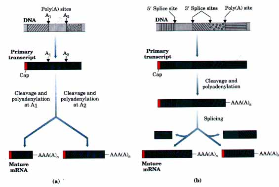
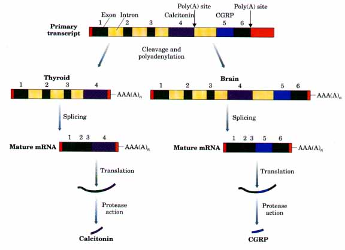
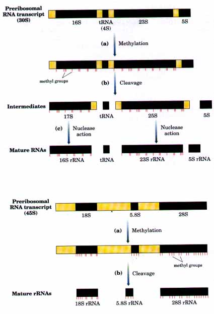
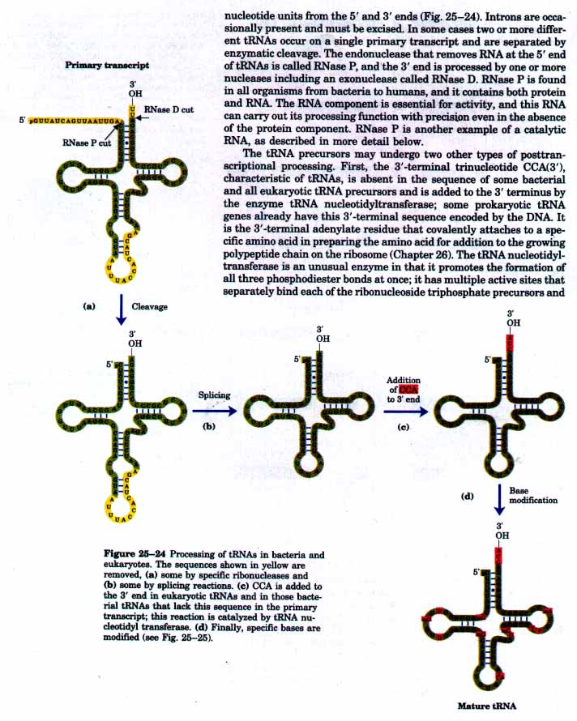
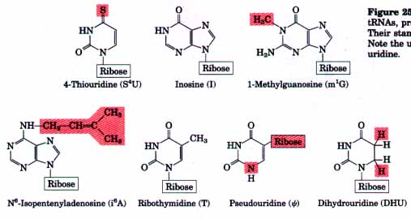

In eukaryotes, mature mRNAs have distinctive structural features at both ends. Most have a 5' cap, a residue of 7-methylguanosine linked to the 5'-terminal residue of the mRNA through an unusual 5',5'triphosphate linkage (Fig. 25-17). At the 3' end, most eukaryotic mRNAs have a "tail" of 20 to 250 adenylate residues, called the poly(A) tail. The functions of the 5' cap and the 3' poly(A) tail are only partially known. The 5' cap binds to a protein and may participate in the binding of the mRNA to the ribosome to initiate translation (Chapter 26). The poly(A) tail also is bound by a specific protein. It is likely that the 5' cap and poly(A) tail and their associated proteins help protect the mRNA from enzymatic destruction.
Figure 25-16 (Facing page) The splicing of yeast tRNA. This splicing pathway requires a highenergy cofactor (ATP) for the ligation step. (a) The intron is first removed by endonuclease-catalyzed cleavage at both ends. (b) The 2',3'-cyclic phosphate on the 5' exon is cleaved by a cyclic nucleotide phosphodiesterase, leaving a 2' phosphate.
(c) The 5' OH left on the 3' exon is then activated in two steps. (d) The free 3' hydroxyl of the 5' exon acts as a nucleophile to displace AMP, joining the two exons with a 3',5'-phosphodiester bond. (e) The 2' phosphate is removed to yield the final product.

Figure 25-17 (Right) The 5' cap of 7-methylguanosine is found on almost all eukaryotic mRNAs. (a) 7-Methylguanosine is joined to the 5' end of the mRNA in a novel 5',5'-triphosphate linkage. Methyl groups (screened in red) are also often found at the 2' position of the first and second nucleotides. Yeasts lack the 2'-methyl groups, and the 2' methyl on the second nucleotide is generally only found in vertebrates. (b) Generation of the 5' cap involves four to five separate steps. adoHcy is an abbreviation for S-adenosylhomocysteine.
| Both types of terminal structures are
added in several steps. The 5' cap is formed by the
condensation of a molecule of GTP with the triphosphate
at the 5' end of the transcript. The guanine is
subsequently methylated at N-7, and additional methyl
groups often are added at the 2' hydroxyls of the first
and second nucleotides adjacent to the cap (Fig. 25-17).
The methyl groups are derived from S-adenosylmethionine. The poly(A) tail is not simply added to the 3' end of the primary transcript at the site where transcription terminates. The transcript is extended beyond the site where the poly(A) tail is to be added, then is cleaved at the poly(A) addition site by a specific riboendonuclease (Fig. 25-18). This cleavage generates the free 3'-hydroxyl group that defines the end of the mRNA and to which adenylate residues are immediately added by polyadenylate polymerase, catalyzing the reaction RNA + nATP where n = 20 to 250. This enzyme requires no template but does require the mRNA as a primer. The site where cleavage and poly(A) addition occur is marked in the mRNA by the highly conserved sequence (5')AAUAAA(3'), situated 11 to 30 nucleotides on the 5' side of the cleavage site. A complex containing the riboendonuclease, polyadenylate polymerase, and possibly other proteins and one or more snRNAs binds to this sequence and carries out the processing reactions. The processing of a typical eukaryotic mRNA is summarized in Figure 25-19. In some cases the polypeptide-coding region of the mRNA is also modified. The origin and mechanism of this RNA "editing" are not understood (see Box 26-1). |
 Figure 25-18 Addition of the poly(A) tail to the primary RNA transcript of eukaryotes. RNA polymerase synthesizes RNA beyond the segment of the transcript containing the cleavage signal ((5')AAUAAA). (a) A complex including an endonuclease and polyadenylate polymerase binds to this signal sequence. (b) The RNA is cleaved 11 to 30 nucleotides 3' to AAUAAA, and (c) polyadenylate polymerase synthesizes a poly(A) tail of 20 to 250 nucleotides, beginning at the cleavage site. |
 |
Figure 25-19 Overview of the processing of a eukaryotic mRNA. The ovalbumin gene is again used as an example (see Fig. 25-11). Introns are lettered and exons are numbered. About three-quarters of the RNA is removed during processing. Introns can make up more than 90%: of the length of other genes. RNA polymerase II extends the primary transcript well beyond the cleavage and polyadenylation site ("extra RNA"). Termination signals for RNA polymerase II have not been defined. |
The transcription of introns consumes energy without apparently returning any benefit to the organism, but evolution would select against interrupted genes if they did not confer some practical advantage to cells. Although these benefits are not yet clear in most cases, an obvious advantage can be seen for transcripts that use splicing to produce multiple gene products.
Primary transcripts for mRNAs fall into two classes. Simple transcripts produce only one mature mRNA and one type of polypeptide product. Complex transcripts, in contrast, produce two or more dif ferent mRNAs and polypeptides. In most cases the complex transcripts are still monocistronic, i.e., only one type of mature mRNA and polypeptide is derived from any given transcript molecule at any one time. The primary transcript, however, has the molecular signals for two or more alternative processing pathways so that one of two or more different mRNAs may result depending upon which pathway is chosen. In different cells or at different stages of development, the transcript might be processed to produce different gene products.
Complex transcripts have either more than one site for cleavage and polyadenylation or alternative splicing patterns, or both (Fig. 25-20). If there are two sites for cleavage and polyadenylation, the use of the one closest to the 5' end will remove more of the primary transcript sequence (Fig. 25-20a). Using this mechanism, immunoglobulin heavy chains are produced that differ at their carboxyl termini; this process is called poly(A) site choice. In fruit flies, using alternative splice sites (Fig. 25-20b), three different forms of the myosin heavy chain are produced at different stages of development. In rats, both

Figure 25-20 Two mechanisms for the differential processing of complex transcripts in eukaryotes:
(a) multiple sites for cleavage and polyadenylation (here, two poly(A) sites, A1 and A2, are shown), and (b) alternative splicing patterns (two different 3' splice sites are shown).
mechanisms are used to produce from a common primary transcript the calcium-regulating hormone calcitonin in the thyroid and a dif ferent hormone (calcitonin gene-related peptide) in the brain (Fig. 25-21).

Figure 25-21 Differential processing of the calcitonin gene transcript in rats. The primary transcript has two poly(A) sites; the first predominates in the thyroid, the second in the brain. Splicing in the brain eliminates the calcitonin exon; in the thyroid this exon is retained. The resulting peptides are processed further to yield the final hormone products: calcitonin in the thyroid and calcitonin gene-related peptide (CGRP) in the brain.
Posttranscriptional processing is not limited to mRNA. Ribosomal RNAs of both bacterial and eukaryotic cells are made from longer precursors called preribosomal RNAs. In bacteria, 16S, 23S, and 5S rRNAs arise from a single 30S RNA precursor having about 6,500 nucleotides. RNA at both ends of the 30S precursor and between the rRNAs is removed in processing (Fig. 25-22).
 |
Figure 25-22 Processing of preribosomal RNA transcripts in bacteria. (a) Prior to cleavage of the 30S RNA precursor, it is methylated at specific bases. (b) Cleavage produces 17S and 25S intermediates, and (c) the final 16S and 23S rRNA products are made by the action of specific nucleases. The 5S rRNA arises from the 3' end of the 30S precursor. From the midsection (and sometimes the 3' end), one or more tRNAs are formed. There are seven copies of the gene for the preribosomal RNA in E. coli, and these difier in the number, location, and identity of tRNAs included in the primary transcript. Figure 25-23 Processing of preribosomal RNA transcripts in eukaryotes. (a) The 45S precursor is methylated at more than 100 of its 14,000 nucleotides, mostly on the 2'-OH groups of ribose units retained in the final products. (b) A series of enzymatic cleavages produces the 18S, 5.8S, and 28S rRNAs. The 5S rRNA arises separately. |
E. coli has seven sets of rRNA genes, each yielding a precursor transcript. Whereas each of these sets has essentially identical rRNA coding regions, they differ greatly in the regions between the rRNA genes. The region between the 16S and 23S rRNA genes generally contains genes for one or two tRNAs, with different tRNAs present in different rRNA precursors. Transfer RNAs are also found on the 3' side of the 5S rRNA in the precursor transcript.
In eukaryotes, a 45S preribosomal RNA is processed in the nucleolus to form the 18S, 28S, and 5.8S rRNAs characteristic of eukaryotic ribosomes (Fig. 25-23). The 5S rRNA of most eukaryotes is made as a completely separate transcript.
Most cells have 40 to 50 distinct tRNAs. In eukaryotic cells there are multiple copies of many of the tRNA genes. Transfer RNAs are derived from longer RNA precursors by enzymatic removal of extra

catalyze formation of the succession of phosphodiester bonds needed to generate the CCA(3') sequence. Although a defined sequence of nucleotides is added, the reaction is template independent and thus represents a mechanism distinct from that used by DNA and RNA polymerases.
The final type of tRNA processing is the modification of some of the bases (Fig. 25-25) by methylation, by deamination, or by reduction. Some of these modified bases occur at characteristic positions in all tRNAs (Fig. 25-24).
 |
Figure 25-25 Some of the modified bases found in tftNAs, produced in posttranscriptional reactions. Their standard symbols are shown in parentheses. Note the unusual ribose attachment point in pseudouridine. |

 RNA-(AMP)n + nPPi
RNA-(AMP)n + nPPi